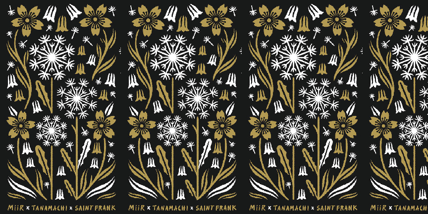
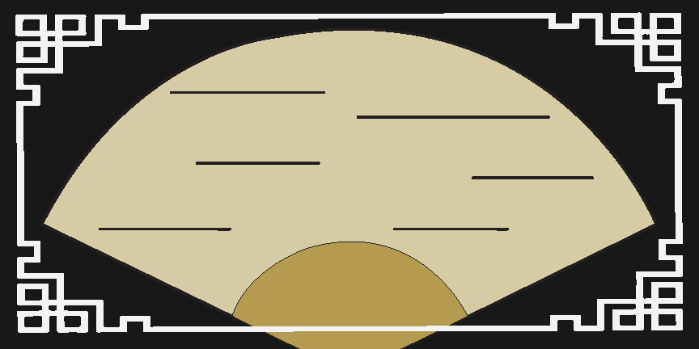
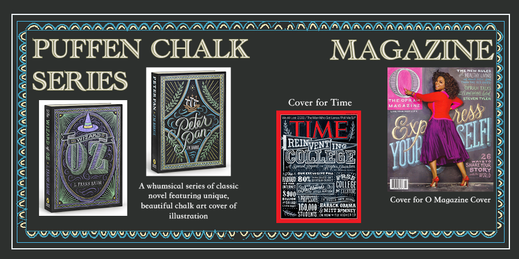
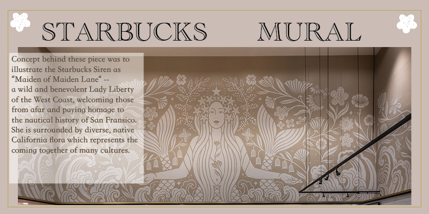
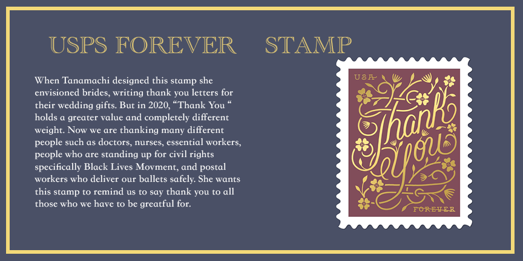

According Book about Dana Tanamachi
Visual Communication – Spring 2022 – Dana Tanamachi's According Book





Description
Creating an according book based on a graphic designer of my choice. In my case, I decided to go with Dana Tanamachi, a New York based graphic designer.The goal of this project is to create a book showcasing a designer's work throughout their career. Each page is decorated with different patterns from her work. After observing her unique design elements, my inspiration was to combine them to make different spreads. Each work showcased in this book was only a few out of many other designs. A designer's style is something distinctive and unique to each individual. The main goal for independent designers is to make sure your audience can distinguish/recognize your work and other artists' work.